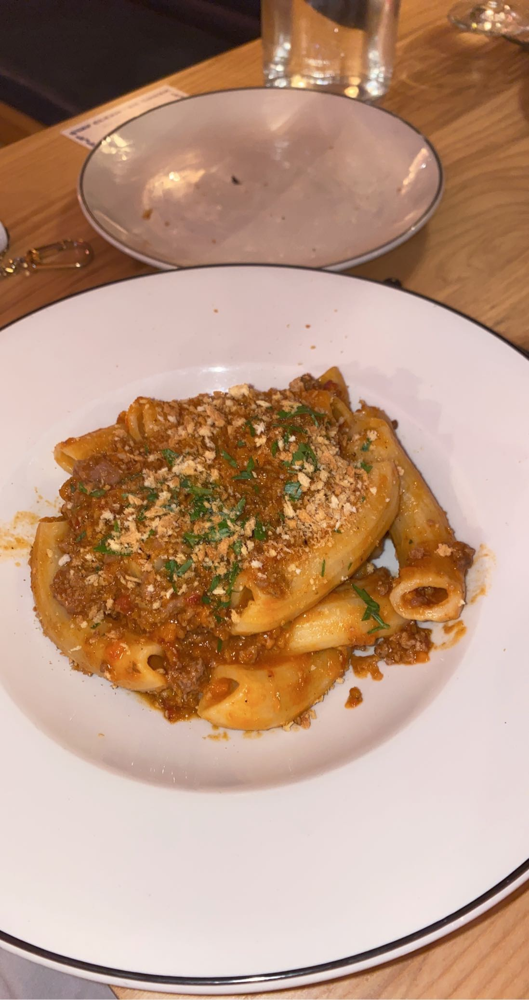
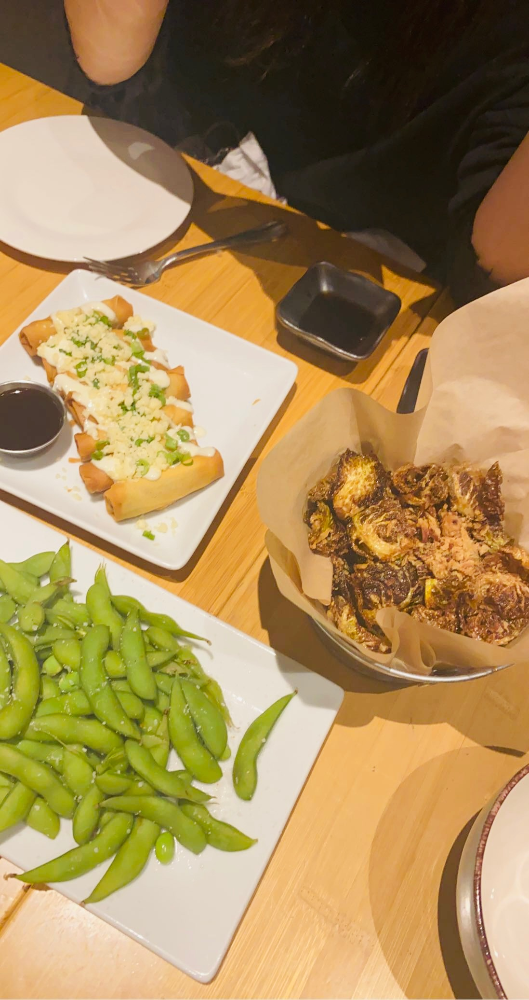

Bar Corallini has delicious Italian food. Some of my favorite dishes are the Antipasti board and the Cacio E Pepe! For more information visit: https://barcorallini.com
Tavernakaya is a Japanese restaurant with the most delicious dumplings and sushi. It also has a great view of the capital. For more information visit: https://www.tavernakaya.com
